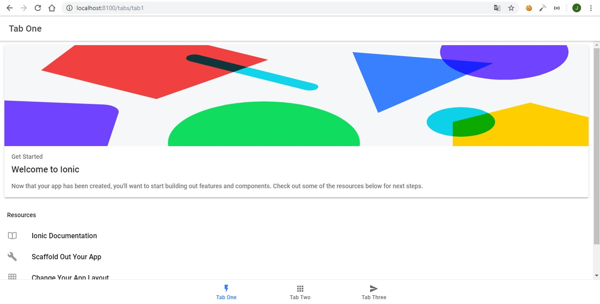

Objetivo: Instalar Ruby on Rails y Ionic y desarrollar una aplicación básica
Ruby on Rails
Ionic
Ruby on Rails es un framework de aplicaciones web de código abierto escrito en el lenguaje de programación Ruby, siguiendo el paradigma del patrón Modelo Vista Controlador (MVC). Trata de combinar la simplicidad con la posibilidad de desarrollar aplicaciones del mundo real escribiendo menos código que con otros frameworks y con un mínimo de configuración. El lenguaje de programación Ruby permite la metaprogramación, de la cual Rails hace uso, lo que resulta en una sintaxis que muchos de sus usuarios encuentran muy legible. Rails se distribuye a través de RubyGems, que es el formato oficial de paquete y canal de distribución de bibliotecas y aplicaciones Ruby.
El proceso de instalación en su mayoría son una serie de comandos que se tienen que agregar por consola y que la terminal haga todo el trabajo. A continuación se mostrarán los comandos a agregar
El primero de ellos es actualizar nuestros paquetes
Lo siguiente es instalar una serie de paquetes necesarios para instalar RVM, con el cual instalaremos Ruby
Ahora agregaremos algunas llaves que nos permitirá descargar los paquetes
Lo siguiente es instalar por medio de CURL, RVM
Ahora agregaremos como nueva fuente a RVM
Ahora, por medio de RVM instalaremos Ruby en su versión más reciente
Estableceremos la versión que instalamos como la default
Una vez instalado, comprobamos la instalación verificando la versión instalada.
Lo siguiente es preparar algunas instalaciones para instalar rails
Ya preparado las instalaciones, procederemos a instalar rails desde GEM
Una vez instalado comprobamos la versión de rails
Para iniciar un nuevo proyecto corremos el siguiente comando, donde el último parámetro será el nombre del proyecto que iniciaremos
Este es el producto final.
Ionic es un framework gratuito y open source para desarrollar aplicaciones híbridas multiplataforma que utiliza HTML5, CSS (generado por SASS) y Cordova como base. Es uno de los framework del momento por utilizar AngularJS para gestionar las aplicaciones, lo que asegura aplicaciones rápidas y escalables.
El proceso de instalación es muy sencillo, solo tenemos que estar seguros de haber instalado anteriormente Nodejs con su manejo de paquetes con npm. Para más info dar click aquí
Una vez asegurados de tener NPM, corremos el siguiente comando
Ya instalado nos aseguramos de que se haya instalado correctamente corriendo el siguiente comando
Para iniciar un proyecto nuevo, escribimos este comando, donde el último parámetro es el nombre del proyecto.
Este es el producto final.
